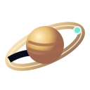
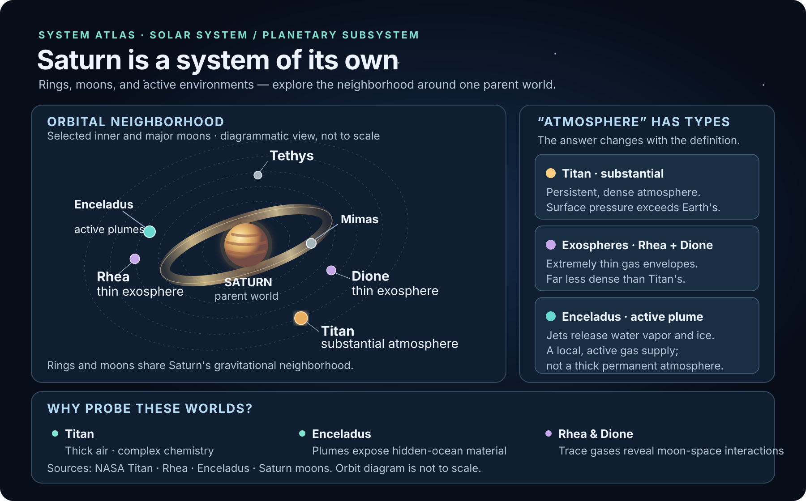

Solar system · planetary subsystem
Saturn System Explorer
Explore Saturn's rings, moons, and unusual environments.
Orbital neighborhood
Choose a moon to inspect how its environment is classified.

Persistent, substantial atmosphereExtremely tenuous exospherePlume-sourced gas
Orbit spacing and body sizes are diagrammatic, not to scale.
Atmosphere labels distinguish a persistent substantial atmosphere, a tenuous exosphere, and gas in active plumes. The infographic is an explanatory projection; it does not encode orbital scale.